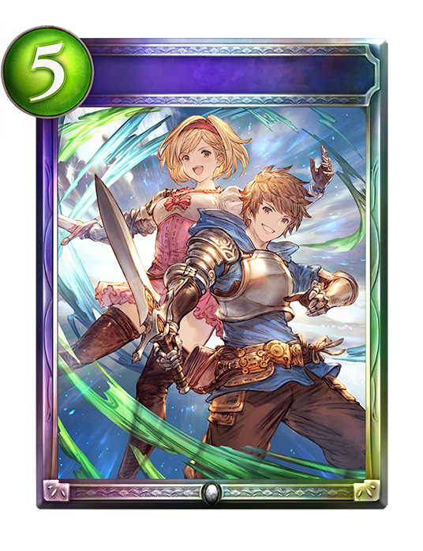
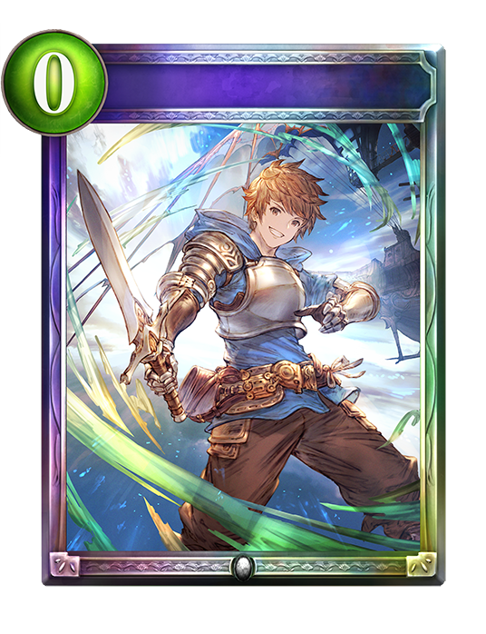
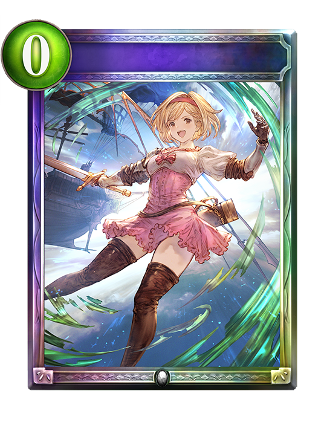

섀도우버스
-
Shadowverse Portal

미래를 향한 비상
그랑의 각오
지타의 결심
이 카드의 비용만큼 PP를 사용하여 결단으로 선택한 카드를 사용한다.
해방 오의
15:
결단 대신
십천중을 거느리는 자 그랑&지타
하나를 소환. 
그랑의 각오
상대방의 무작위 추종자 둘에게 피해 5. 추종자 카드 2장을 무작위로 내 덱에서 손으로 가져온다.

지타의 결심
상대방의 무작위 추종자 하나에게 피해 10. 내 EP를 1 회복. 내 PP를 2 회복.